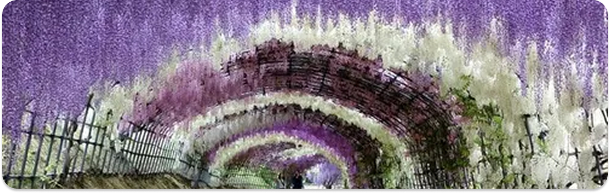
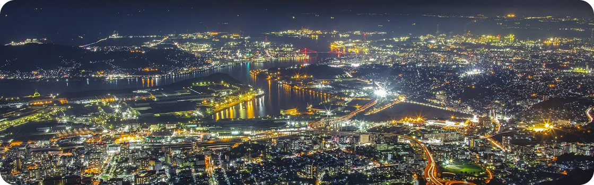
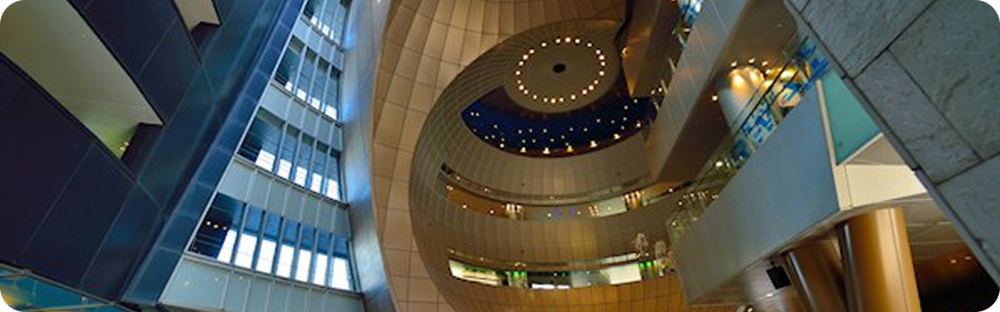

PARA OS AMANTE DE HISTÓRIA
DESCUBRE TRÉS LUGARES IMPERDIVÉIS EM KITAKYUSHU:

1- Kawachi Wisteria Garden
O Kawachi Wisteria Garden (Jardim Kawachi de Glicínias) é um jardim privado localizado em Kitakyushu, na prefeitura de Fukuoka. Famoso por seus túneis de glicínias (wisterias) em florescência, tornou-se uma das atrações sazonais mais fotografadas do Japão. O local é conhecido por sua atmosfera etérea durante a primavera, atraindo visitantes do mundo inteiro.

2- Monte Sarakura
O Monte Sarakura é uma montanha localizada em Kitakyushu, na província de Fukuoka, Japão. É um dos pontos turísticos mais conhecidos da região, famoso por suas vistas panorâmicas da cidade e pela iluminação noturna, considerada uma das três melhores do Japão.

3- Riverwalk Kitakyushu
Um complexo moderno com lojas, restaurantes, cinema e espaços culturais, localizado perto do rio e do castelo de Kokura. É um ótimo lugar para passear e conhecer a parte urbana da cidade. perfeito para compras e lazer